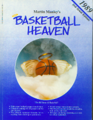
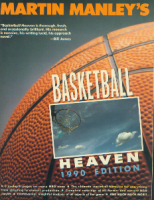
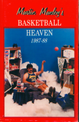

Martin Manley: My Life and Death
Born 8-15-53, Died 8-15-13 , Age 60
"Basketball Heaven" Books



In 1983, I and my partners started a Satellite TV company in Topeka. We went from just the three of us to eventually having almost 100 employees. I was primarily responsible for the retail division, but we also had a wholesale and manufacturing division and sold to other STV dealers all over the country. The end of 1983, all of 1984 and 1985 were boom years for us. In fact, the STV wholesale division of the company lasted into the 1990’s, but the industry changed quickly by the end of 1985.
What happened was scrambling. Content providers determined that if they didn’t do something, far fewer numbers of customers would pay monthly for cable TV and even fewer would pay for programming such as was the case for the movie channels. So, on January 15, 1985, HBO began scrambling. It took months before others decided to do it and, although this was an objection to overcome, the industry still thrived through 1985. However, by mid 1986 it became apparent that dish owners were going to have to ante up to get the kind of programming they thought they would get when they first bought an STV system.
Needless to say, for a few years (until descramblers were made available to the homeowner and prices for programming was established) scrambling had a drastic affect on the industry – including our company. We downsized and mostly eliminated the retail division. This was perfect timing for me as I’ve always been one to operate on three to four-year cycles anyway.
During those years, I had been able to watch tons of NBA games on satellite and it turned me into an NBA fan. So, when we downsized, I decided to research and write a book on basketball called Basketball Heaven (see enlarged pictures of covers below). I was familiar with Bill James’ work on baseball. James is considered the father of modern-day sabermetrics – the analysis of baseball from a statistical point of view. Even in 1986, he was nationally known after just a few years of writing. Coincidentally, James lived in NE Kansas as well and I eventually met with him after the first book was finished.
Even though the second and third Basketball Heaven were superior to the first, I still consider the first to be a great achievement. I created it from nothing which included not only coming up with ideas and content, but also doing the typesetting and design – along with a friend of mine (Kevin). In those days, very few people even had computers in their homes – much less the ability to typeset books that had tables and charts, etc. We used state-of-the-art software at the time and had to save chapters off on floppy disks because computers simply didn’t have the hard drive capacity to hold all the data.
There are many issues which I attempted to tackle in the first book which were developed over the next two books (one per year), but the first book, which was printed in preparation for the 1987-88 NBA season, laid the foundation for much of what I discussed thereafter.
The single most important contribution that I made was something called “Efficiency Rating”. This can be found on numerous sites today such as NBA.com and others. I discuss Efficiency Rating in another category to the left under Sports.
The bottom line is that for several years I had the only book of its type for basketball while baseball had a number of different authors seeking to challenge Bill James.
Baseball is, of course, the ultimate statistical sport – much more so than basketball. However, I grew up a basketball fan first and foremost and so that was my first love. Consequently, it just made sense that I would try to adapt some statistical analyses that had never been done before to the sport and leave baseball to others.
When I met with Bill after the first book had been completed, he offered to put me in touch with his agent in NYC. Ultimately, she was able to get a book deal with Doubleday and the rest is history. I did many radio talk shows and was even invited to the NBA All-Star weekend in Houston in 1989 where I was on TBS as an analyst, but was really there for no other reason than to hawk the book.
I had lots of outstanding quotes by the top people in the sport – many of which I used in marketing or on the covers of the books.
What is probably impossible to appreciate unless you’ve been there before is the amount of work that it took to produce. Even when Doubleday got involved, I had already proofed it and did all the typesetting. So, when I handed the book to them, all they had to do was stick the pages in a printer and off they go. They didn’t have to do one single thing to it except design the cover. In fact, I got a letter from one of the editors stating that in all his years, he had never seen anyone (writer) produce such a quality “masterpiece” ready to go to print “turn key”. But, considering how obsessed I have always been with respect to detail, I’m not surprised, even if they were.
By the time I had done three books over three years, I was so exhausted I can’t begin to tell you. It’s like eating pizza every day for a year. You may love pizza, but there comes a point where you say to yourself, “If I never see another piece of pizza as long as I live, it will be too much too soon!”
By then we had other things to work on in the ongoing company and I took over the Security division on a retail basis. It grew from basically nothing to being the largest in the area in just a few years… and then it was on to the next challenge.
As far as Basketball Heaven is concerned, when I more or less retired in the early 2000’s, I decided I needed to do something that I would enjoy and I took a job with the Kansas City Star sports department responsible for statistics. Pretty much all I had to do to get the job was hand them a copy of one of my books.
So, for well over 10 years, I wasn’t professionally involved with sports at all. However, I’ve always been a huge sports fan and kept stats on everything all the time. It didn’t take too much to get back into the swing of things. Being a person who operates on 3-4 year cycles, that worked out pretty well at the Star. For the first several years, I only did stats work for the paper. However, almost five years ago I began a blog on the Star’s website (KansasCity.com) called Upon Further Review. When I left the paper 18 months ago, I recreated the blog and called it Sports In Review (SportsInReview.com).
Even though Basketball Heaven is mostly nothing more than a memory for me at this point, it was a very important time in my life because I proved to myself that I could begin with a blank sheet of paper and end with three books in three years which carved out a niche that previously had not existed. That confidence was important for the rest of my work life.
When I began the blog at the Star, it was initially with another writer. At the time, our thinking was that he would do most of the writing while I might be able to come up with something good to write about 2-3 times a week. BOY, WAS I WRONG!!!
Almost immediately, the creative juices began flowing and I wrote far more than the other fellow. He eventually moved away from KC and the blog was all mine. I populated it with 1.5 stories (articles) per day for a couple years. In fact, up to the last day I was at the Star, I had written at least one article for 653 consecutive days! And, all you have to do to appreciate what that level of production means is to read a few of them on SportsInReview.com. The amount of time, research, and writing involved – not to mention coming up with the ideas… is staggering, even for me, and I consider myself a prodigious researcher/writer.
Basketball Heaven is when I first made an impact on others with respect to sports and so the experience will always be special. I’m 100% confident that I was ahead of my time – too far ahead. In fact, there isn’t anyone who has assumed the position as the Bill James of basketball even today. I’m confident that had I continued to write the books, I would have become that person a long time ago. However, I am who I am and I simply can’t do anything with that much energy and intensity (which is how I did everything) for more than few years before I simply have to do something else.
With respect to the blog (Upon Further Review and then Sports In Review), my mind would have been on borrowed time even if my body wasn't. I was doing two posts per day on SIR for many months, but then once I realized all the things I had to get done by August 15, 2013, I reduced it to one post per day and eliminated reader comments to save myself time.
